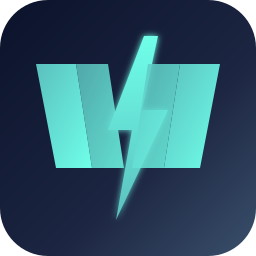
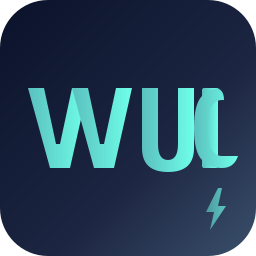
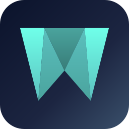
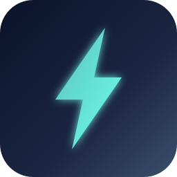
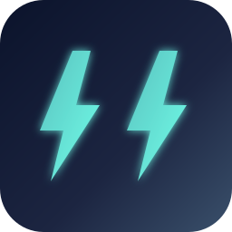
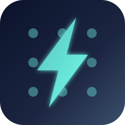

6 SVG concepts. The first 3 (typographic) are the most recent — they
incorporate the letter W or the full "WUIC" mark and look less generic
than a plain bolt. The bottom 3 (bolt-based) are the older draft.
Same palette as og-image.svg: deep navy background +
teal/cyan accent.
Typographic (latest)
wuic-icon-w-tipo.svg
Bold geometric W where the central valley is a real lightning bolt that overshoots the top of the letter. Reads as W first, the brand detail (bolt) is noticed on a second glance. Scales down to favicon size without losing identity.

16wuic-icon-wuic-monogram.svg
All 4 letters "WUIC" drawn as custom glyphs in one horizontal row + a small bolt accent in the bottom-right corner. Readable as a word down to ~48×48. Use for blog covers, profile banners, anywhere the mark has space to breathe. Not ideal for 16×16 favicon (use D for that).

16wuic-icon-w-faceted.svg
W built from 4 triangular facets in different shades of teal — gives a folded paper / crystal feel. Geometric like the framework itself. Distinct from any common tech logo (Webpack / Vercel / Webflow don't have this shape). Edge highlights at the top give the "ice" finish.

16Bolt-based (earlier draft, kept for reference)
wuic-icon-bolt.svg
Single lightning bolt on a dark tile. Generic.

16wuic-icon-w-bolts.svg
Two bolts side-by-side forming a stylized W.

16wuic-icon-grid-bolt.svg
3×3 grid + bolt overlay. Concept-heavy.

16